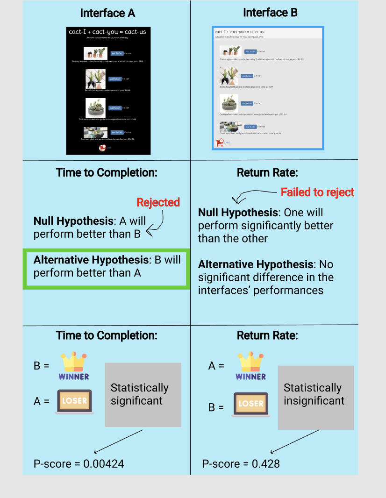

Part 0: Making & Deploying the Websites
This is a link to my modified html files:
Part 1: Creating Hypotheses for Statistical Tests
Time to Completion:
-
Null hypothesis: Average time to completion for interface A will be lower than time to completion for interface B. Therefore, interface A performs better for this metric.
-
Alternative hypothesis: Average time to completion for interface B will be lower than time to completion for interface A. Therefore, interface B performs better for this metric.
Reasoning behind Alternative Hypothesis:
The font-size of text on interface B is larger than that of interface A. This may make the text easier to read. Additionally, the background colours of the page are lighter (white-adjacent) with a dark grey text. Lastly, the text is left-aligned. This means that interface B may be easier to skim-read and less daunting to navigate quickly because many websites and hard-copy texts contain left-aligned text of a dark color over a lighter background. For this reason, the user may be more used to, and consequently more comfortable, viewing webpages that have a similar design.
On the other hand, interface A has a black background with white text that is center-aligned. The font is also smaller than the font used for interface B. This design may draw attention to the minimal text but the font size may make it less easy to read quickly. Therefore, users may need to spend more time on the page to get to completion.
Return Rate:
- Null hypothesis: There will be a significant difference in performance on this (return rate) metric between interface A and interface B.
- Alternative hypothesis: There will be no significant difference in performance on this (return rate) metric between interface A and interface B.
Reasoning behind Alternative Hypothesis:
I did not make any conscious changes to either interface that might inspire or dissuade the user from returning to the homepage. The cart buttons are identical for both interfaces, they are also placed in the same position relative to the rest of the text on each interface’s homepage. The checkout page for both interfaces is also identical.
Part 3: Conclusions and Takeaways
Below is my infographic:

Results and Broad Takeaways:
-
I think that the number of users that I got was a limitation that affected the results of my test. I think that if I had gotten more users, my results could have been more statistically significant for the return-rate metric.
-
The fact that interface B performed better than interface A for the ‘time to completion’ metric suggests that users are able to perform tasks more easily using interfaces with larger, more legible font. Increased legibility may lend to increased usability.
- I was not surprised that for the return rate metric, I failed to reject the null hypothesis because one interface had a significantly higher return rate than the other. However, I was surprised that it was interface B that had the higher return rate. This made me realise that a high return rate on its own may not mean that a user is having a bad experience with the interface.
- Similarly, a lower time to completion, on its own, does not necessarily mean that one interface performs better than the other.